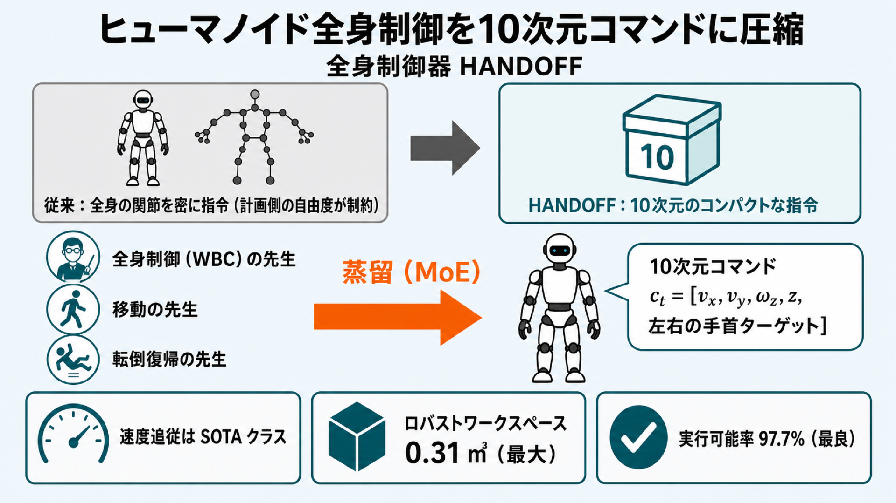

arXiv の新着論文から 1 本を選び、専門外の技術者にも読みやすい日本語で解説します。
-

2026-06-04
ヒューマノイドの「指示の出し方」を10次元に圧縮する：3人の先生から学ぶ全身制御器 HANDOFF
ヒューマノイドへの指示を 10 次元のコンパクトなコマンドに置き換え、得意分野の異なる 3 つの教師方策を状況依存の MoE 蒸留で 1 つの制御器にまとめた研究。実機の Unitree G1 で SOTA 並みの速度追従と最大級の操作範囲を両立しました。